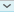

Corrigir trabalhos com ou sem verificação de plágio (Exercício)
Sumário
Avaliar envios
Identifique a coluna do Exercício e selecione a tentativa nas células que possuem o símbolo .
A exclamação indica que a atividade precisa de correção.
O arquivo enviado pelo aluno será automaticamente exibido na tela:
É possível fazer anotações no trabalho do aluno diretamente na tela, sem necessidade de download.
Se o Exercício permitir mais de um envio, certifique-se de avaliar a(s) tentativa(s) correta(s) – é possível atribuir uma nota por tentativa.
Após avaliar o trabalho, dê “Enter” para confirmar, ou clique no botão “Enviar”.
Caso o Exercício esteja com a opção Rastrear possibilidades de plágio via SafeAssign habilitada, o item SafeAssign estará disponível para verificação do relatório de plágio.
Embora a ferramenta indique o percentual de cópia atribuída à atividade do aluno, é fundamental conferir o relatório apresentado.
Clique no botão  para acessar o painel de avaliação.
Se existir uma Rubric associada ao Exercício, ela pode ser usada para atribuir a nota ao aluno.
Além das marcações no documento é possível dar um feedback geral ao aluno, inclusive anexando um arquivo.
A opção de adicionar notas possibilita registrar comentários particulares, que não ficarão visíveis aos alunos.
Fazer o download de todas as submissões
Caso deseje fazer o download de todos os arquivos submetidos na atividade:
Selecione de quais alunos/grupos você deseja baixar os trabalhos.
Caso o exercício aceite mais de uma tentativa, selecione se deseja baixar apenas os arquivos da última tentativa ou os arquivos de todas as tentativas.
O que fazer em caso de plágio
Papel do Docente
- Consiste em:
- Identificar ocorrências;
- Informar, se necessário, os envolvidos;
- Registrar os fatos;
- Corrigir as avaliações e NÃO PUBLICAR as notas dos envolvidos.
- Após o encaminhamento, o assunto passa a ser gerenciado pelo Apoio/Coordenação (PGLS) ou MultiInsper/Coordenação (Graduação).
Identificar ocorrências
- Ocorrências:
- Referem-se a quaisquer situações de SUSPEITA de plágio, cola ou outras formas de desonestidade intelectual;
- Não deve haver qualificação prévia:
- TODAS SITUAÇÕES FUNDAMENTADAS devem ser encaminhadas ao Apoio/Coordenação (PGLS) ou MultiInsper/Coordenação (Graduação).
Informar, se necessário, os envolvidos
- Nos casos onde a identificação da ocorrência não se dá na presença do(s) aluno(s), ou seja, na correção de atividades:
- Se necessário, deve-se comunicar INDIVIDUALMENTE ao aluno a existência de um QUESTIONAMENTO quanto à atividade e que, por essa razão, o tema foi encaminhado à Coordenação, devendo o aluno aguardar contato;
- Ao publicar as notas, automaticamente, o aluno perceberá que sua nota não foi divulgada.
Registrar os fatos
- Enviar ao Apoio/Coordenação (PGLS) ou ao MultiInsper/Coordenação (Graduação), os materiais que suportam a ocorrência: avaliações, trabalhos, Relatório Blackboard, informações da Internet.
- Preparar também um relatório simples descrevendo a ocorrência e a avaliação quanto ao ocorrido.
- Atenção quanto ao Relatório do Blackboard.
- Aluno será contato para relatar o ocorrido e apresentar justificativa.
- Caso é avaliado pela Coordenação.
Em caso de constatação de plágio
- PGLS
- Qualquer Notificação por Desonestidade Intelectual implica na REPROVAÇÃO do aluno na disciplina, independentemente do peso ou valor da avaliação (válido a partir de 2013/1).
- Graduação
- Aluno recebe “Notificação de infração ao código de ética”. Processo é arquivo e, em caso de reincidência, a depender da gravidade, aluno é desligado da escola.
- Aluno notificado não recebe menção honrosa.